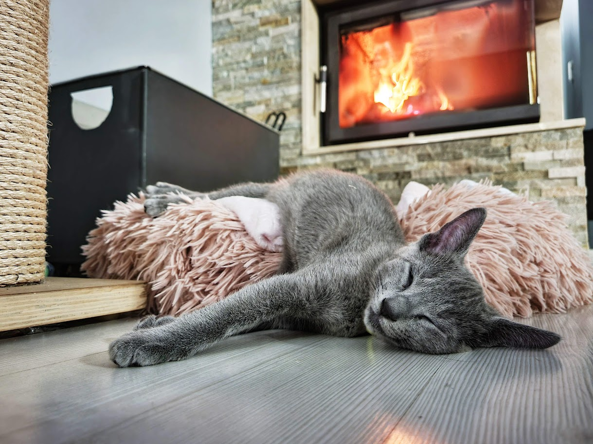

Kto stworzy rosyjskiemu niebieskiemu dobry dom?
To koty, które nie mogą zostawać na długo same. Dlatego jeśli chcesz kota niezależnego, który sam sobie zagospodaruje długi czas Twojej nieobecności i nie będzie smutny z tego powodu – nie decyduj się na rosyjskiego niebieskiego. To zwierzęta rodzinne, ale wybiorą sobie szczególnie jednego człowieka, którego będą uwielbiać ponad wszystko – jeśli nie jesteś na to gotowy, to również ten kot nie jest dla Ciebie.
Może za to mieszkać z innymi zwierzętami – dogada się zarówno z innymi kotami, jak i psami. Nie dąży do konfliktów, jest spokojny i z natury łatwo zaakceptuje towarzystwo innych zwierząt. Jest żywy, ciekawski i chętny do zabawy, a przy tym bardzo przyjacielski – może towarzyszyć starszemu dziecku, jednak należy je nauczyć jak właściwie obchodzić się z kotem.
Nie lubią zmiany otoczenia, podróży ani wychodzenia z domu. Jeśli marzysz o tym, by dużo i często podróżować z kotem czy wychodzić z nim na spacery – pomyśl o innej rasie. Rosyjski niebieski to zdecydowany domator, który najlepiej czuje się w czterech ścianach.
